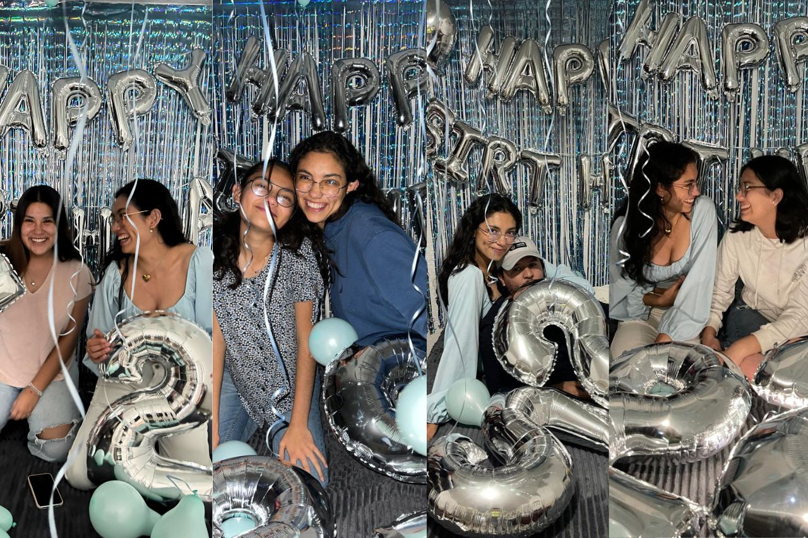
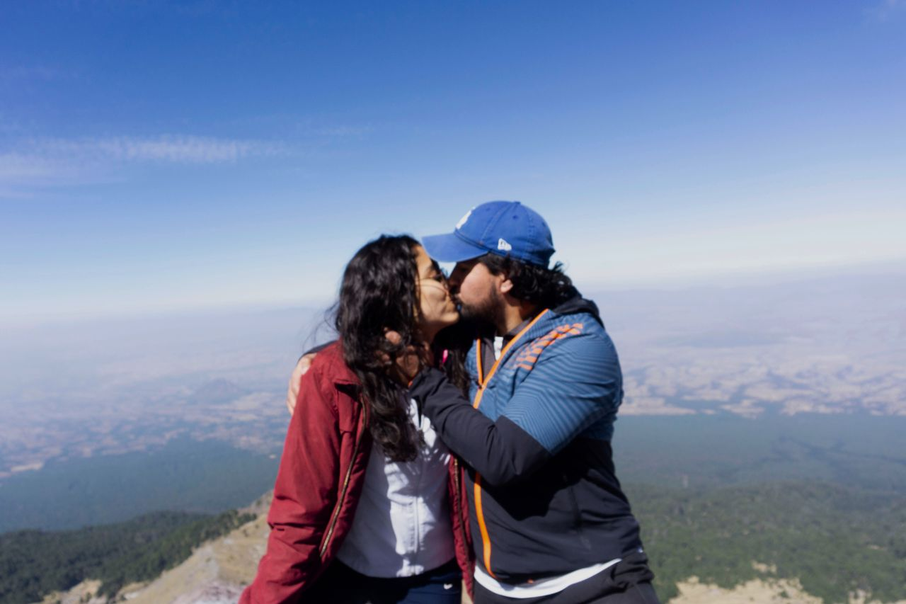
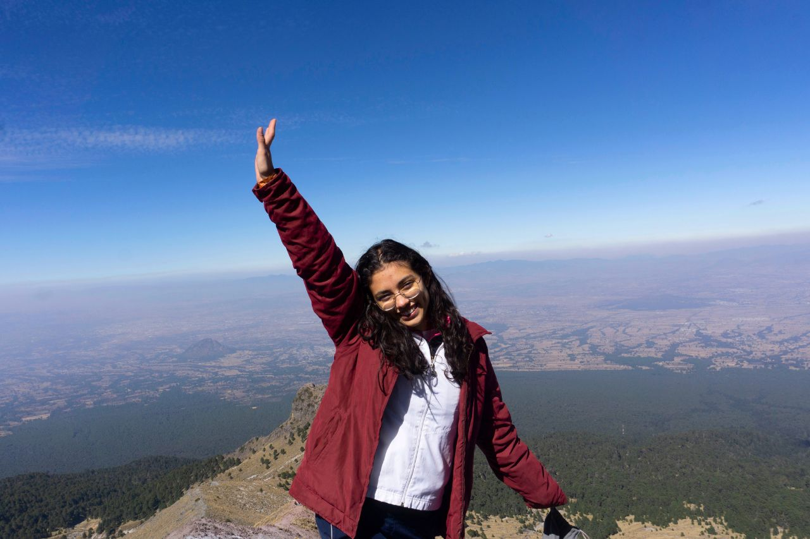

I'm feeling 22
Mi cumpleaños número 22 fue una experiencia inolvidable, en la que me sentí profundamente amada y especial. Desde el momento en que empezó el día, estuve rodeada de gestos de cariño por parte de mi familia, amigos y pareja. Cada detalle, desde los mensajes hasta las sorpresas que prepararon para mí, hizo que me sintiera valorada y apreciada. Fue un día lleno de risas, abrazos y momentos que guardaré por siempre en mi corazón. Más allá de los regalos, lo que más me marcó fue el hecho de compartir con las personas que más quiero y sentirme tan querida por ellas.
Subiendo la Montaña
A principios de este año, tuve una emocionante y retadora excursión con mi novio a La Malinche, algo completamente nuevo para mí. Nos levantamos muy temprano, nos abrigamos bien y nos dirigimos hacia la montaña. Al inicio, todo iba de maravilla; manteníamos un buen ritmo y estar rodeada de naturaleza era increíblemente relajante. Una de las cosas que más me sorprendió fue el silencio absoluto que se siente allá arriba y ver a las personas que viven en el campo, acostumbradas a subir y bajar la montaña con gran rapidez.
Durante la subida, tomamos algunos descansos para hidratarnos, comer un poco de azúcar, y aprovechamos para tomar fotos. Sin embargo, cuando llegamos a la zona de los arenales, las cosas se complicaron. Ahí fue cuando empecé a sentirme mal, pero decidimos seguir subiendo. Sin embargo, a casi 100 metros de la cumbre, tuve que parar porque el famoso "mal de montaña" me alcanzó. Sentí náuseas y vértigo, así que mi novio y yo decidimos que lo mejor era comenzar a descender.
 El descenso no fue fácil. Las altas temperaturas habían derretido el hielo, y bajar sin resbalarse era un desafío, incluso para mi novio que ya tenía experiencia. Yo, siendo mi primera vez en una montaña, estaba aterrada. Después de calmarme un poco, decidí bajar en cuclillas, como si fuera un cangrejo, y sorprendentemente, funcionó. Aunque el terreno se volvió más sencillo, todavía me sentía muy mal y tuve que devolver el estómago. A los pocos minutos, me sentí mucho mejor, y aunque mis piernas dolían terriblemente, logramos terminar el descenso corriendo. Cuando llegamos a la zona de campamento, descansamos y comimos algo antes de regresar. A pesar de no haber alcanzado la cumbre, me sentí muy orgullosa de lo que logré y, sin duda, tengo muchas ganas de intentarlo de nuevo.
La experiencia de subir La Malinche fue una lección de superación personal y resiliencia para mí. Aunque no alcancé la cumbre, lo más importante no fue llegar a la cima, sino todo lo que aprendí en el camino. Enfrentar mis miedos, controlar la ansiedad en una situación difícil y mantener la calma me enseñó mucho sobre mi capacidad para adaptarme y seguir adelante, incluso cuando las cosas no salen como lo planeado. A veces, los retos no son solo físicos, sino también mentales, y esta experiencia me mostró que puedo enfrentar y superar ambos. Me siento orgullosa de lo que logré y sé que volveré más fuerte la próxima vez.
Jugar Frontón
Jugar frontón en la universidad con mi mejor amiga ha sido una experiencia súper divertida. Aunque es un ejercicio pesado, cansado y bastante técnico, siempre nos reímos y disfrutamos cada partida. Tal vez no seamos las más habilidosas en el juego, pero lo que nos falta en técnica lo compensamos con risas y buenos momentos. Cada vez que jugamos, terminamos agotadas pero felices, y eso es lo que realmente importa: disfrutar del deporte juntas, sin importar los resultados.

Estar en la Playa
Disfrutar de la playa es una de las cosas que más me llena de alegría. Me encanta sentir el sol en la piel mientras me relajo, ya sea tomando el sol o disfrutando de un buen picnic en la arena. Hay algo especial en el ambiente relajado de la playa, donde se puede jugar y divertirse sin preocupaciones. Además, la ropa de playa es algo que me fascina; desde los trajes de baño hasta los sombreros y sandalias, todo me hace sentir cómoda y lista para disfrutar del momento.
Pero lo que más amo de la playa es nadar en el mar. Aunque las olas me revuelquen una y otra vez, no puedo evitar sonreír y sentirme feliz. Es una experiencia que me llena de emoción y diversión, ya que el mar tiene una energía única que me conecta con la naturaleza de una manera especial. Nadar entre las olas es algo que siempre disfruto, sin importar cuántas veces me caiga.
Además, las actividades acuáticas son de mis favoritas. Ya sea hacer snorkel, paddleboard o simplemente flotar en el agua, siempre encuentro paz y tranquilidad en esos momentos. Estar en el agua, con la inmensidad del mar a mi alrededor, me permite desconectarme del mundo y disfrutar del presente, lo que me da una sensación de libertad y calma que pocos lugares pueden ofrecer.
La playa es, sin duda, un lugar donde puedo ser yo misma y vivir el momento al máximo. Cada visita es una nueva oportunidad para crear recuerdos inolvidables con amigos y familiares, ya sea riendo juntos, compartiendo historias o simplemente disfrutando del hermoso paisaje. Me encanta la sensación de comunidad que se forma entre las personas que comparten ese espacio; todos estamos ahí para relajarnos y disfrutar de la vida. Cada ola que me arrastra me recuerda la importancia de dejarme llevar y de disfrutar de las pequeñas cosas, como una tarde bajo el sol, un día lleno de risas y la maravillosa brisa marina que me acompaña. La playa siempre será mi refugio y fuente de inspiración.